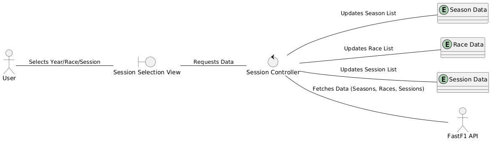
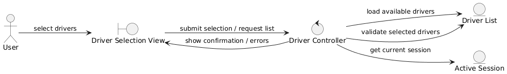
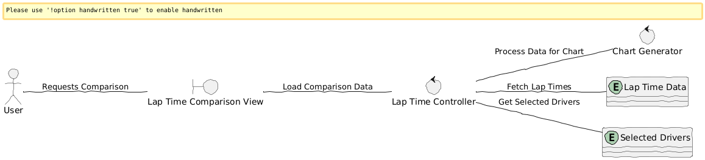
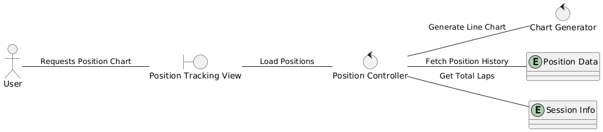
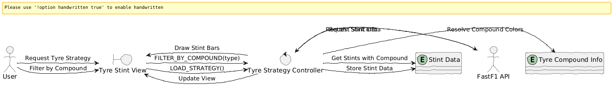

Reference Diagrams for Manual Drawing
Note: These are the CLEAN reference versions. Use these to verify the text, flow, and
connections when you draw them by hand.
1. Select Season/Race/Session
Select_Season_Race_Session.pdf

2. Select Drivers
Select_Drivers.pdf

3. View Lap Time Comparison
View_Lap_Time_Comparison.pdf

4. View Position Over Laps
View_Position_Over_Laps.pdf

5. View Tyre Stints
View_Tyre_Stints.pdf
